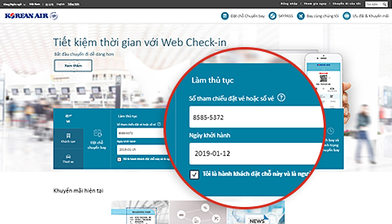
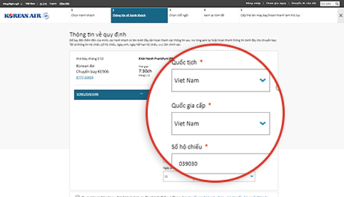
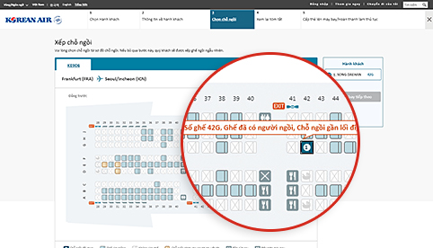
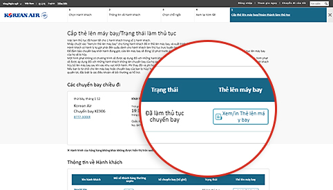

Quy trình làm thủ tục chuyến bay đã được rút ngắn! Hãy chuẩn bị để chuyến bay diễn ra thuận tiện!
Làm thủ tục lên máy bay qua web/di động
Việc này sẽ giúp tiết kiệm thời gian để quý khách có thể thư giãn khi đến sân bay.
Cách sử dụng
| Điều kiện hợp lệ | Các tuyến bay đang khai thác | Giờ làm thủ tục chuyến bay |
|---|---|---|
| Hành khách bay trên các chuyến bay của Korean Air có vé điện tử hợp lệ | Tất cả các tuyến bay |
|
- (ghi chú 1) Các chuyến bay đến/đi Hoa Kỳ, Canada, Vương quốc Anh và Paris : trước 24 giờ ~ 1 giờ
- Các hạn chế về Làm thủ tục lên máy bay qua web/di động (Nhấp vào liên kết này để xác nhận)
 Hãy đảm bảo quý khách có đủ thời gian để thực hiện việc kiểm tra an ninh và các thủ tục khác
(hoàn thành tất cả các thủ tục 1 giờ trước khi khởi hành đối với chuyến bay quốc tế và 20 phút
trước khi khởi hành đối với chuyến bay nội địa)
Hãy đảm bảo quý khách có đủ thời gian để thực hiện việc kiểm tra an ninh và các thủ tục khác
(hoàn thành tất cả các thủ tục 1 giờ trước khi khởi hành đối với chuyến bay quốc tế và 20 phút
trước khi khởi hành đối với chuyến bay nội địa)
Cách làm thủ tục chuyến bay

-

Step 1 Tìm kiếm đặt chỗ
- Trong quá trình đặt chỗ, nếu quý khách nhập mã số khách hàng thường xuyên thì việc làm thủ tục chuyến bay sẽ dễ dàng hơn.
- Nếu phần đặt chỗ không hiển thị, hãy nhập mã số đặt chỗ hoặc số vé, sau đó nhập ngày khởi hành và tên.
Bạn có thể bắt đầu đăng ký web bằng cách nhập số đặt chỗ, ngày khởi hành và tên hành khách nếu bạn không phải là thành viên không đăng ký trong khu vực đặt vé của màn hình chính của trang chủ.
-

Step 2 Nhập thông tin giấy tờ tùy thân (chuyến bay quốc tế)
- Phải nhập chính xác thông tin trên hộ chiếu và các giấy tờ tùy thân cần thiết. Nếu không nhập thông tin hợp lệ, tùy vào kết quả kiểm tra tại thành phố đến/đi, quý khách có thể không làm thủ tục chuyến bay được.
- Tùy chọn Làm thủ tục lên máy bay qua thiết bị di động cho phép quý khách dễ dàng nhập thông tin hộ chiếu bằng cách sử dụng chức năng quét.
Thông tin hộ chiếu như quốc tịch, quốc gia / khu vực cấp hộ chiếu, số hộ chiếu, v.v. có thể được nhập vào màn hình nhập thông tin hành khách giai đoạn hai tại thời điểm đăng ký Web.
-

Step 3 Xếp chỗ ngồi
- Chọn ghế ưa thích.
- Đăng nhập bằng ID (hoặc mật khẩu đối với người không phải hội viên) nếu quý khách muốn thay đổi số ghế. (Tuy nhiên, dữ liệu SKYPASS phải được lưu trước khi đăng nhập.)
Đăng ký web Bước 3 Bạn có thể kiểm tra thông tin của từng chỗ ngồi, chẳng hạn như số ghế, vị trí và đặc điểm chỗ ngồi, và chọn chỗ ngồi mong muốn từ màn hình gán ghế.
-

Step 4 Hoàn tất việc làm thủ tục chuyến bay
- Nhấp vào “Xem/in Thẻ lên máy bay” cho mỗi hành khách để in thẻ lên máy bay.
- Quý khách có thể xuất lại thẻ lên máy bay và hủy việc làm thủ tục chuyến bay trước hạn chót làm thủ tục chuyến bay trực tuyến.
Đăng ký web Bước 5 Trong màn hình Hoàn tất đăng ký, bạn có thể kiểm tra trạng thái đăng ký web hoặc cấp thẻ lên máy bay của mình cho PC.
Các quy trình tại sân bay sau khi làm thủ tục chuyến bay trực tuyến
-

01 Làm thủ tục chuyến bay trực tuyến và nhận thẻ lên máy bay
- Chuẩn bị sẵn sàng thẻ lên máy bay (thẻ lên máy bay điện tử hoặc in) và xuất trình tại sân bay vào ngày khởi hành.
-

02 Đến sân bay
Đối với hành khách có thẻ lên máy bay
- Khi quý khách không có hành lý ký gửi Mang thẻ lên máy bay và đi thẳng đến phòng đợi lớn mà không dừng lại ở quầy.
-
Khi quý khách có hành lý cần ký gửi
Ký gửi hành lý tại quầy (ghi chú 2) được chỉ định để làm thủ tục chuyến bay trực tuyến và đi tới phòng đợi lớn.
(ghi chú 2) Quý khách có thể ký gửi hành lý nhanh chóng và dễ dàng tại quầy tự ký gửi hành lý (D1~D17, E1~E17) ở sân bay Incheon.
Đối với hành khách có phiếu đổi thẻ lên máy bay
- Lấy thẻ lên máy bay tại quầy được chỉ định để làm thủ tục chuyến bay trực tuyến. Quý khách cũng có thể ký gửi hành lý trong khi lấy thẻ lên máy bay.
-

03 Kiểm tra an ninh và xuất nhập cảnh
- Hành khách và đồ tùy thân cá nhân sẽ được bộ phận an ninh kiểm tra để đảm bảo sự an toàn của hành khách và máy bay.
- Mang hộ chiếu và giấy tờ tùy thân (thị thực), theo yêu cầu của quốc gia đi và đến, và tiến đến cửa kiểm tra.
-

04 Lên máy bay
- Quý khách phải mang thẻ lên máy bay của mình.